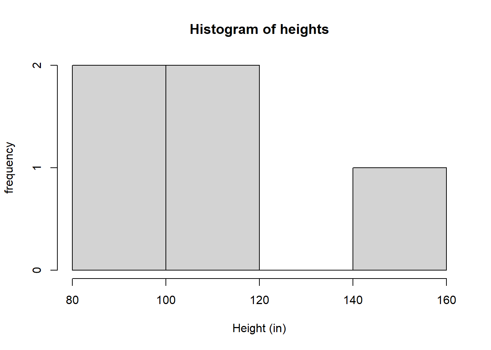
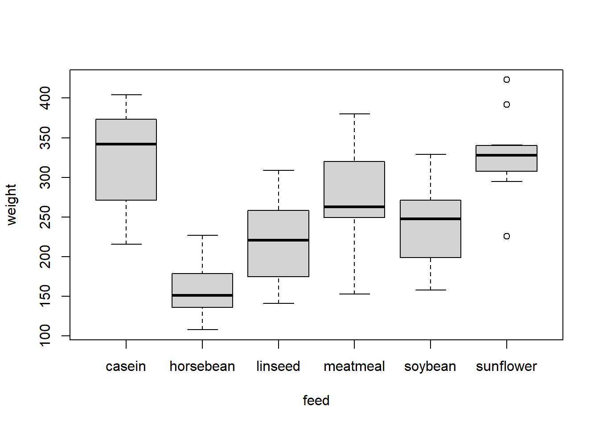

# load in the dataset women
data("women")Working with code
When we write our code it is useful to write descriptions about what each line is doing. This is an important step if you send your code to someone else and you want them to know what you have done, or if you don’t look at your code for a while and forget what you did!
We can add comments to our R script using the # symbol.
Anything written after the # symbol will not be evaluated by R as code. This means we can comment out lines of code.
# 2 + 2
3 + 4[1] 7Let’s go through one of our previous examples and add comments to our code.
# load in the dataset women
data("women")
# find the mean weight
mean_weight <- mean(women$weight)
# find which women had a weight more than the mean
which_rows <- which(women$weight > mean_weight)
# find corresponding weight and height for these rows
women[which_rows, ] height weight
9 66 139
10 67 142
11 68 146
12 69 150
13 70 154
14 71 159
15 72 164Debugging code
So far you may have had some errors and warnings when you run your R code. Learning how to fix R code, either written by yourself or someone else, takes time. Practice and understanding errors will help you get quicker - but even advanced R users still make mistakes.
Let’s look at some examples of errors in broken code and see if we can fix them.
heights <- c(100, 120, 90, 150, 110, )Error in c(100, 120, 90, 150, 110, ): argument 6 is emptyThe mistake here is that we have a comma “,” after 110 but no number, so R is telling is that the argument is empty. If we delete the comma, then we do not get an error:
heights <- c(100, 120, 90, 150, 110)Now that we have fixed the code, let’s try and plot our vector of heights.
heights <- c(100, 120, 90, 150, 110)
hist(heights, xlab = "heights (cm)", xlab = "frequency")Error in hist.default(heights, xlab = "heights (cm)", xlab = "frequency"): formal argument "xlab" matched by multiple actual argumentsHere we have accidentally used the argument xlab twice and R has recognised this. Let’s change the second xlab to ylab.
heights <- c(100, 120, 90, 150, 110)
hist(heights, xlab = "Height (in)", ylab = "frequency")
Now our code runs without errors.
Exercise
Can you fix the following code so that its runs without errors?
# load in data set chicken weights
data("chickwts")
# what column names of the data set
colname(chickwt)Error in colname(chickwt): could not find function "colname"# make a box plot of the weight against feed
boxplot(weight ~ fed, data = chickwts)Error in eval(predvars, data, env): object 'fed' not found
Solution
- The data set name was incorrect in
colnames - Use ‘colnames’ not ‘colname’
- The column name is ‘feed’ not ‘fed’
# load in data set chicken weights
data("chickwts")
# what column names of the data set
colnames(chickwts)[1] "weight" "feed" # make a box plot of the weight against feed
boxplot(weight ~ feed, data = chickwts)